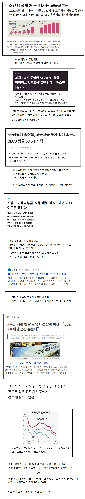

학생이 줄어드니 돈썩어나서 넘치는 교육청 근황
댓글
교육청, 학생 문화센터 등에 돈지랄 진짜 엄청남
아는 사람은 알거임 ㅋㅋ
뭔 학생오케스트라가 시도군교육청마다 다있음ㅋㅋㅋ
와 진짜? 쩌네
전자가 좋은거 같은데 후자 의미가 있는거임? ㅈㄴ 돈낭비같은데
내용에도 있는 옳그떠 이야기라
매번 돈없다고 징징징
액수 어마어마하네...
ai로 삽질만할거 뻔해서 깍는게 맞다고봄
ㅋㅋㅋㅋAI교과서ㅋㅋㅋㅋㅋ 에휴ㅋㅋ
이건 무조건 지거국 키우는게 맞음.
초중고 예산낭비 너무심해
초중딩때 뭐 교육시킬건지 구체적인 계획이 있어야하는데 없잖아
지거국도 결국은 어차피 망하게 되어 있음
걍 인서울에 집중하는게 장기적으로 맞는 선택임
ㅇㄱㄹㅇ 지방자치제 해서 득보는건 지방이 아니라 지방 토호들뿐
걔네들 배불리자고 대체 얼마나 돈 붓는건지 ㅅㅂ
지방교육세 뜯지마 시발
애도 못낳는데 삥뜯고 있네
예산 내리면 다음 해에는 예산 못 올린다
와이프 교직원인데 요즘 학교 돈쓰는거 들으면 놀란다ㅋㅋㅋ 우리때랑 너무 다름
만들때는 나라가 망해도 교육은 시켜야한다는 좋은 취지로 만든거겠지만 지금 시대에는 안맞지
애초에 저 법이 만들어졌을때 고졸의 사회적 위치가 지금 대졸보다 높은 상황이라 취지를 봐도 국립대 지원에 쓰는게 맞음
싹다 깎아내야지 무상급식도 없애고
거 몇일전에 비건어쩌고 꼴값떨던새끼들 지들돈으로 사쳐먹으라고해라
자꾸 퍼주니까 고마운지모르고 크는것도 문제임
초등학생 부모들 학원 뺑뺑이를 왜이렇게 돌리나 했더니 학교가 빨리 끝나서 퇴근때까지 애가 있을 곳이 있어야 해서 그렇더라
남는 돈으로 개뻘짓하지말고 돌봄교육이라도 확대하라고 좀
이게 백번 맞음 좆같은 쓰레기성능 갤럭시 패드 사주지말고
안됨 그럼 퇴근을 못하잖어
돈을 많이주먄 안그러겟지
한학년에 한두반 있는 학교도 돈 넘쳐나서 겁나 쓰더라
학생도없는 전교조 교직원노조가 뭐 어쩔거임ㅋㅋ
나라에 돈이 부족한게 아니라 저런 사례들이 쌓여서 비효율이 생기는거지
정작 필요한 곳에 못쓰고
애들 밥 주는 건 건들지 마
돈이 남아도니 학생 없는 학교도 리모델링 싹 하는구나
시골학교가면 자전거도 풀셋으로 줌 ㅋㅋ
술 담배에서 교육세 빼자
돈 지랄이긴 해
앞으로 더더 그럴테고
우리보다 ai 디지털 도입한 나라 다시 종이 필기로 롤백 했음
교사부터 없애야함 학생은 줄어드는데 교사는 그대로임
솔직히 돈 남아돌아서 돈쓰는것도 스트레스잖아. 늘어나던 예산이 한번 깎이면 나중에 필요할때 없을까봐 쫄려서 그런거지. 정부 세수는 늘어나고 학생수는 점점 줄어드는데 이렇게 쓰는게 맞기나 해?
제일 어처구니없는 세금
교행애들은 다 알거다...
적당히 깎고 그걸 고등교육에 밀어줘야 하는게 맞음
초중고는 돈이 넘쳐서 어디에 쓸지를 걱정하는데
대학 순수과학이나 당장 응용할 뭔가가 안보이는 기술개발은 예산 받아오느라 절절매고 있음
호의가 계속되면 그게 권리인줄알아요
싹 다 신생아 예산으로 돌려
교육청 예산 개많지 돌리는 사업들이나 세부내역 단가들도 널널해서 하위사업자들 돈쓰기쉬움
ㅋㅋㅋ 교사들한테 문구점 선불카드 주는데 지정된 대형문구점에서 파는 거면 뭘 사든 다 허용됨.
삼x문구에서는 별 게 다 있음. 냉동식품부터 주방용품, 인테리어용품.... 그게 문구임?
몇년전에도 메타버스로 똑같은얘기 했었잖아요
혁신학교로 지정되는 초등학교 가보면 돈이 썩어나서 진짜 시설이니 수학여행지니 장난 아니더라
이건 깎는게 맞다
ㅋㅋㅋㅋ뭐 애들한테 클로드 맥스라도 결제해주냐?
ai는 핑계고 원래 세금 먹는 놈들이 예산 좀만 깎여도 죽는 소리 오지게함
학생이 반토막났는데 세금은 계속 올라가니 돈이 남아돌겠지 ㅋㅋ 눈먼돈이 남아돌면 뭘하고 싶을까???
초중고 교육계는 만족을 몰라.